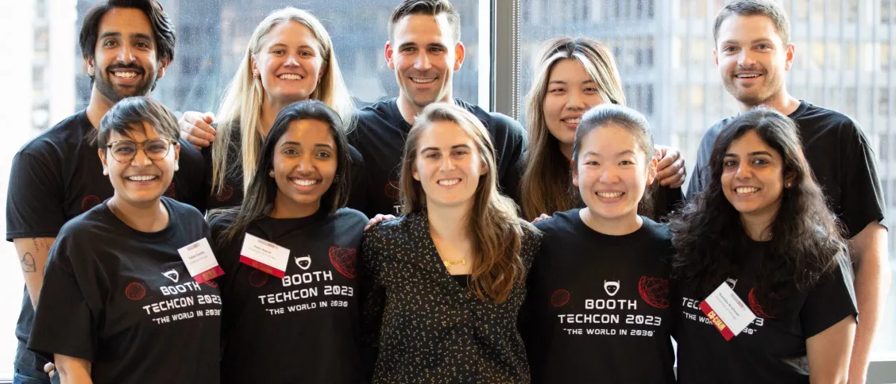
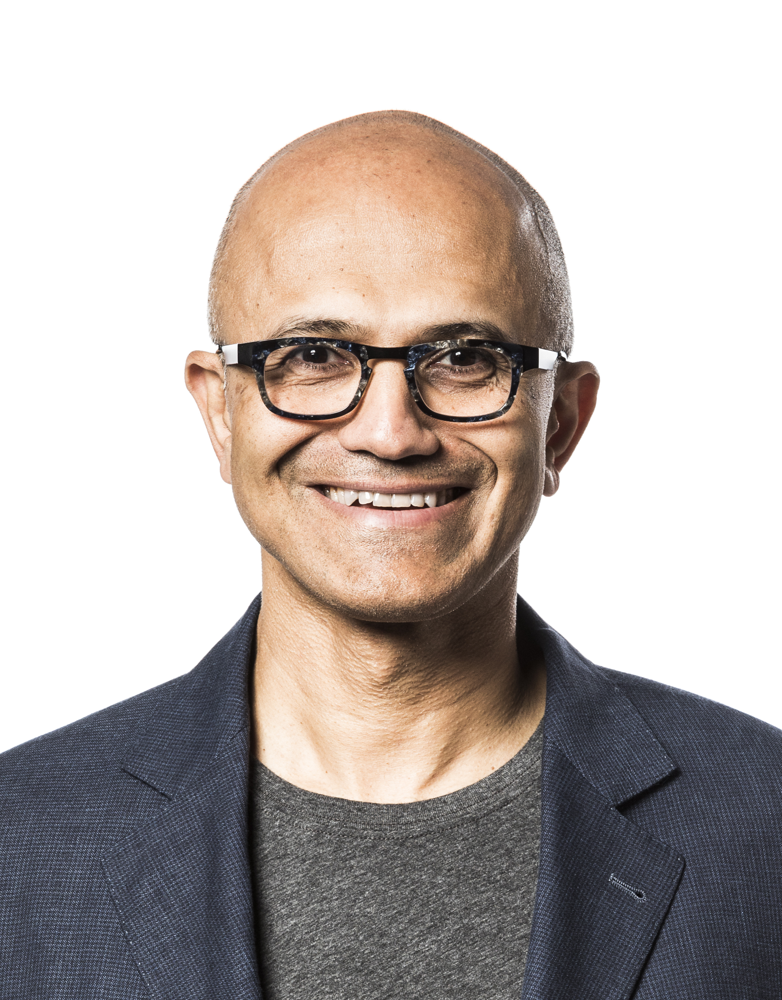
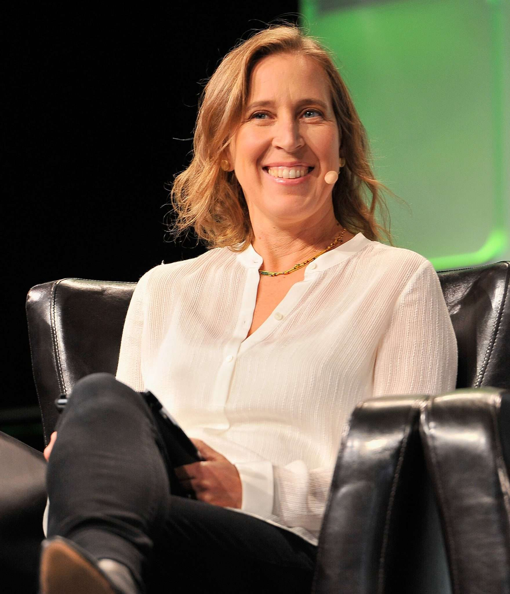

The Origins and Evolution of TechCon TechCon, one of the most anticipated annual technology conferences, had humble beginnings. It was first conceived in 2005 by a group of tech enthusiasts who wanted to create a platform where innovators, developers, and industry leaders could come together to share ideas and explore emerging technologies. The inaugural event was held in a modest community center, attracting just 200 attendees, most of whom were local professionals and students. Despite its small scale, the first TechCon sparked significant interest due to its engaging discussions on the future of software development and early insights into cloud computing. Over the years, TechCon evolved into a global phenomenon. By 2010, it had moved to larger venues, hosting thousands of participants from around the world. Each year, the event introduced groundbreaking topics, from artificial intelligence and blockchain to the Internet of Things (IoT) and cybersecurity. The organizers embraced a dynamic format, adding workshops, panel discussions, and live demonstrations to complement the keynote speeches. This interactive approach made TechCon a must-attend event for professionals eager to stay ahead of technological trends. In recent years, TechCon has embraced virtual and hybrid formats to accommodate a growing global audience. The 2020 pandemic necessitated a shift to online platforms, which surprisingly expanded its reach to millions of attendees. Today, TechCon is more than just a conference; it is a movement that fosters innovation, collaboration, and the exchange of ideas. With each iteration, it continues to inspire the tech community and drive the evolution of technology, making it an indispensable part of the industry’s landscape.
Goals and Driving Principles of TechCon TechCon’s primary goal is to foster innovation and collaboration within the technology community. By bringing together industry leaders, developers, and tech enthusiasts, the conference aims to spark new ideas, share cutting-edge research, and accelerate the adoption of emerging technologies. It is a platform where individuals and organizations can showcase advancements and find solutions to global challenges through technology. The driving principles behind TechCon include accessibility, inclusivity, and sustainability. The organizers are committed to ensuring that the event is accessible to diverse in-person and online audiences. Inclusivity is emphasized by featuring voices from underrepresented groups, promoting equity in the tech sector. Additionally, TechCon prioritizes sustainable practices, striving to minimize its environmental footprint while maximizing its impact on innovation and progress.
Notable Speakers from Previous Years Satya Nadella Satya Nadella, the CEO of Microsoft, is a prominent figure in the tech industry who has played a pivotal role in transforming Microsoft into a leader in cloud computing and artificial intelligence. Under his leadership, the company has embraced a more open and innovative culture, with initiatives like Azure and Microsoft Teams becoming critical tools in the digital workspace. Nadella's vision for the future of technology emphasizes empowerment and collaboration, making him a standout speaker at TechCon.  Susan Wojcicki Susan Wojcicki, the former CEO of YouTube, is celebrated for her contributions to the digital economy and the creative industry. Her leadership expanded YouTube’s global reach, fostering a platform that empowers content creators and supports diverse voices. Wojcicki's insights on technology’s role in shaping culture and communication have made her a highly sought-after speaker, inspiring audiences at TechCon with her innovative approaches. 